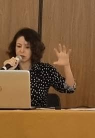
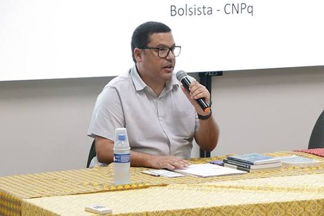
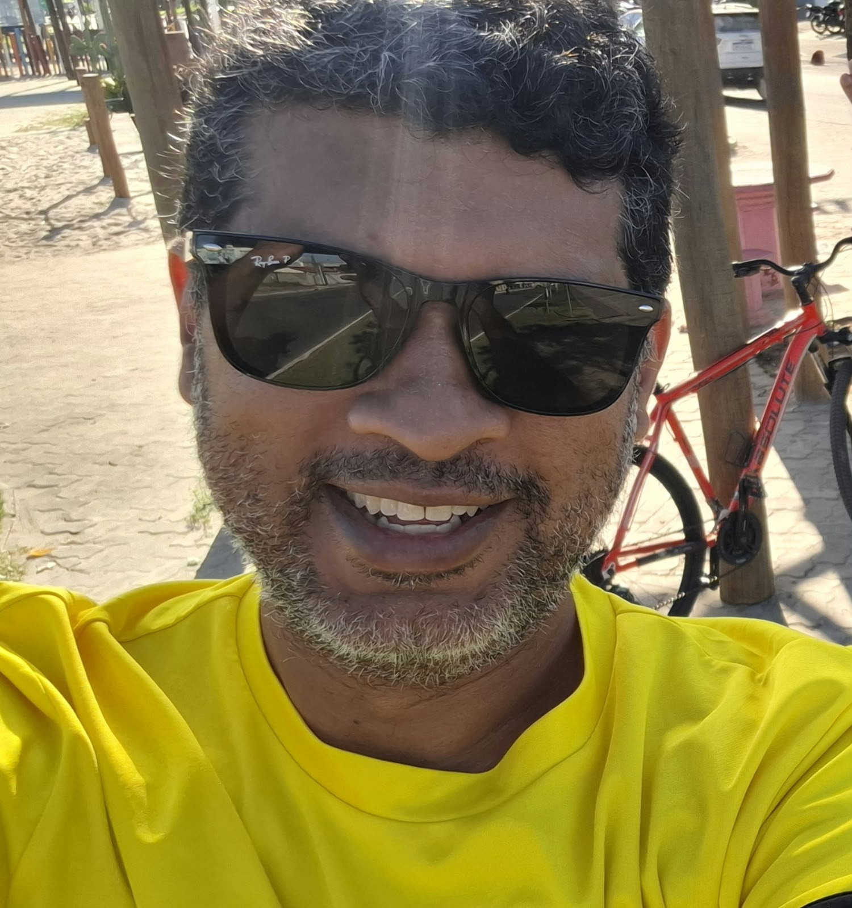
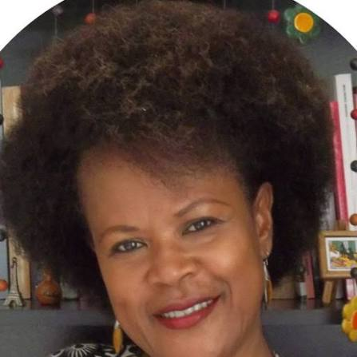
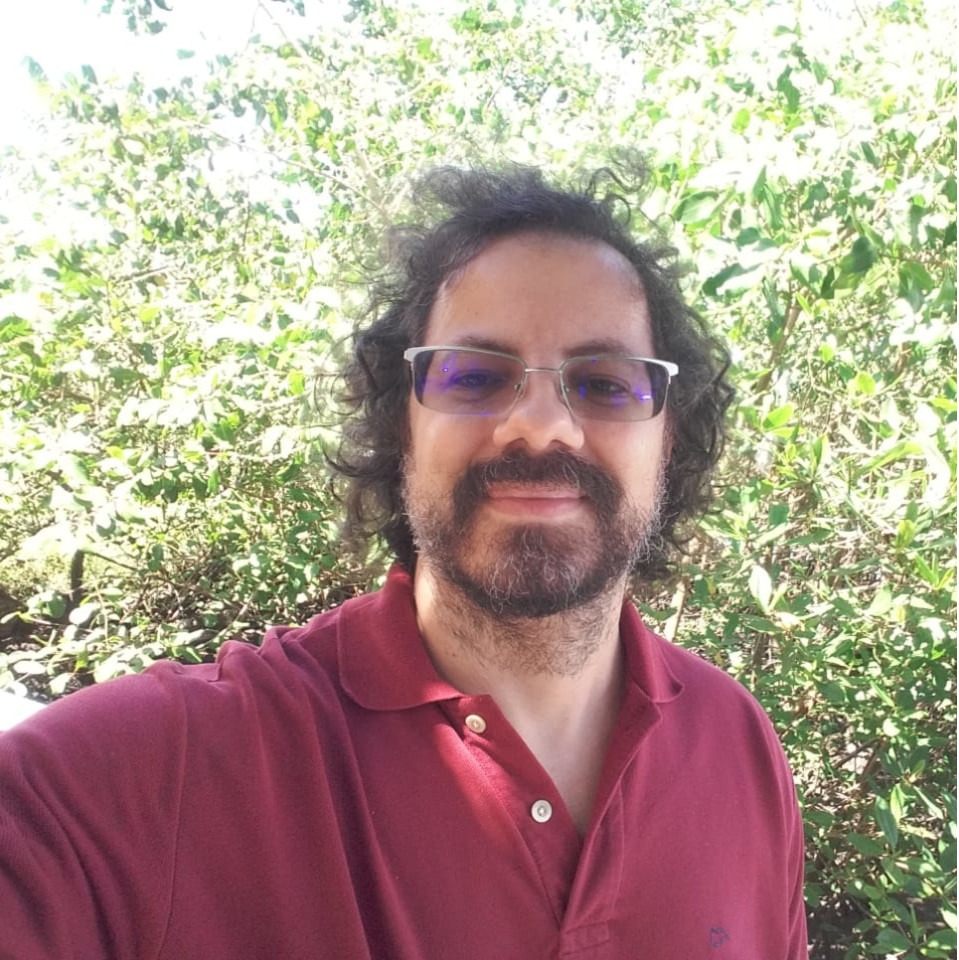
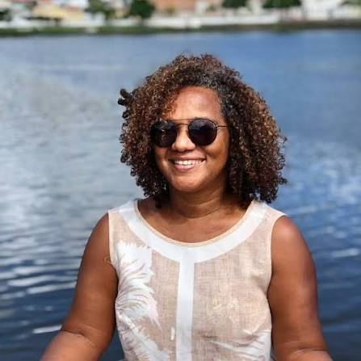
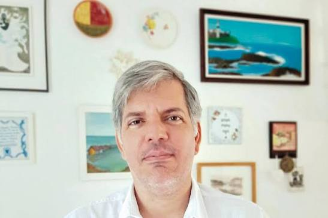
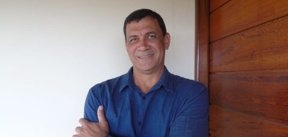

Corpo docente atual
Quem ensina hoje
Professoras e professores que integram atualmente o Curso de História da UFRB. Os perfis reúnem, conforme o material disponível, trajetórias, atividades de ensino, pesquisa e extensão, produção acadêmica, fotografias e depoimentos.
Aline Najara da Silva Gonçalves
André de Almeida Rego
Antonio Liberac Cardoso Simões Pires

Camila Fernanda Guimarães Santiago
Página individual de memória docente.
Dênis Renan Corrêa

Fabrício Lyrio Santos
Página individual de memória docente.
Gabriel da Costa Ávila

Henrique Sena dos Santos

Isabel Cristina Ferreira dos Reis
Página individual de memória docente.
Juvenal de Carvalho Conceição

Leandro Antonio de Almeida
Luciana da Cruz Brito
Marco Antônio Nunes da Silva

Martha Rosa Figueira Queiroz
Página individual de memória docente.
Nuno Gonçalves Pereira
Paulo César Oliveira de Jesus

Sérgio Armando Diniz Guerra Filho
Página individual de memória docente.
Solyane Silveira Lima
Tânia Maria Pinto de Santana

Walter da Silva Fraga Filho
Página individual de memória docente.
Memória docente
Quem ajudou a construir o curso
Ao longo de vinte anos, diferentes professoras e professores participaram da formação do Curso de História. Este espaço reúne docentes efetivos, substitutos e outros vínculos que fizeram parte dessa trajetória.